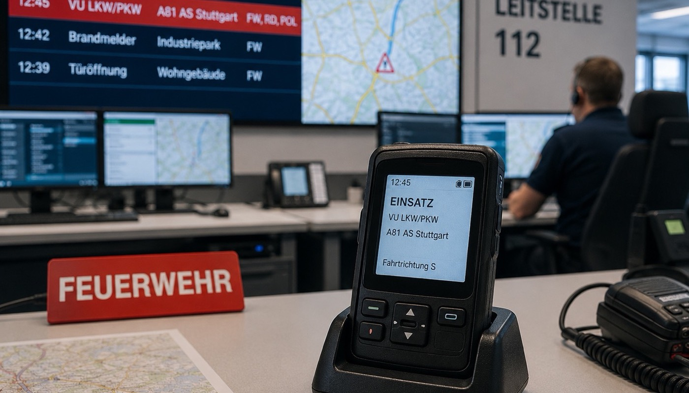

Eine BOS-Objektfunkanlage ist erst dann legal in Betrieb – erst dann darf sie dauerhaft senden –, wenn die Bundesbehörde für den Digitalfunk BOS (BDBOS) die Inbetriebnahmebestätigung erteilt hat. Bis zu diesem Moment müssen neun klar definierte Verfahrensschritte in der richtigen Reihenfolge, mit den richtigen Unterlagen und durch qualifizierte Stellen durchlaufen werden.
Das klingt nach einem überschaubaren Prozess. In der Praxis ist es eines der komplexesten Genehmigungsverfahren im Bauwesen. Jeder Schritt involviert andere Behörden, fordert andere Dokumente und hat andere Qualifikationsvoraussetzungen. Ein einziger unvollständiger Einreichungsschritt stoppt das gesamte Verfahren – und jeder Monat Stillstand bedeutet für Bauherren und Objektbetreiber: keine Nutzungsfreigabe, keine Einnahmen, laufende Finanzierungskosten.
Dieser Artikel erklärt das BOS-Anzeigeverfahren vollständig: Was passiert in jedem der neun Schritte, welche Fehler entstehen typischerweise – und warum ein Verfahrensbegleiter mit Erfahrung der entscheidende Faktor dafür ist, dass das Verfahren ohne Unterbrechungen durchläuft.

Was ist das BOS-Anzeigeverfahren?
Das BOS-Anzeigeverfahren ist der behördlich vorgeschriebene Prozess zur Zulassung und Inbetriebnahme digitaler BOS-Objektfunkanlagen im TETRA-Digitalfunknetz. Es wird über ein neun Punkte umfassendes Anzeigeformular (AF) der BDBOS gesteuert.
Hintergrund: BOS-Objektfunkanlagen sind keine isolierten Systeme. Sie binden sich über Repeater in das öffentliche BOS-Freifeldnetz ein – das bundesweit genutzte TETRA-Digitalfunknetz von Polizei, Feuerwehr und Rettungsdienst. Eine falsch konfigurierte oder schlecht ausgeführte Anlage kann das Freifeldnetz stören, Basisstationen desensibilisieren oder Interferenzen erzeugen, die sich auf unbeteiligte Einsatzkräfte auswirken.
Das Anzeigeverfahren stellt sicher, dass jede Anlage vor der dauerhaften Inbetriebnahme technisch geprüft, behördlich bestätigt und frequenzrechtlich genehmigt ist. Es ist kein bürokratischer Formalismus – es ist der Schutzrahmen für ein kritisches Sicherheitsnetz.
Vorstufe: Das obligatorische Konzeptgespräch
Bevor das eigentliche Anzeigeverfahren startet, steht ein Schritt, den viele unterschätzen: das Konzeptgespräch. Es ist keine informelle Vorabsprache – es ist ein strukturiertes, verpflichtendes Abstimmungsgespräch zwischen Bauherr, Fachplaner, den zuständigen BOS (in der Regel der Feuerwehr) und der zuständigen Landesstelle (AS/LS).
In diesem Gespräch werden grundlegende Weichenstellungen vorgenommen:
- Ist eine BOS-Objektfunkanlage für dieses Objekt tatsächlich erforderlich?
- Welche taktischen Anforderungen stellt die Feuerwehr? (Zu versorgende Funkgruppen, Handover-Bereiche, Sonderbereiche)
- Welche technischen Rahmenbedingungen gibt die Landesstelle vor?
- Ist der Fachplaner qualifiziert, das Verfahren zu führen?
Wer dieses Gespräch ohne erfahrenen Fachplaner betritt, riskiert, Zusagen zu machen oder Anforderungen zu übersehen, die das spätere Verfahren erheblich erschweren. Das Konzeptgespräch ist der Moment, in dem der Grundstein für einen reibungslosen Verfahrensablauf gelegt – oder verfehlt – wird.
Die neun Schritte des Anzeigeverfahrens
Nach dem Konzeptgespräch folgen die neun offiziellen Verfahrensschritte, die sequenziell durchlaufen werden müssen. Kein Schritt kann übersprungen, kein Schritt kann ohne Abschluss des vorherigen begonnen werden.
Punkt 1: Planung der Netzanbindung
Der Fachplaner übermittelt die grundlegenden Projektdaten an die anfordernde Stelle: Objektbeschreibung, erste Messwerte (Panoramamessung, Best-Server-Angabe der nächstgelegenen TETRA-Basisstation) und den Nachweis seiner eigenen Qualifikation.
Warum dieser Schritt kritisch ist: Fehler oder Lücken in den Messdaten führen zu Rückfragen oder Nachforderungen, die das Verfahren sofort stoppen. Die Panoramamessung muss mit kalibriertem Equipment und nach definierten Vorgaben durchgeführt werden – kein Schätzwert, keine vereinfachte Messung.
Punkt 2: Prüfung durch die anfordernde Stelle
Die zuständige BOS – in der Regel die Brandschutzdienststelle – prüft die eingereichten Unterlagen und bestätigt formell die Erforderlichkeit der Anlage. Zusätzlich macht sie taktische Vorgaben: Welche Funkgruppen müssen versorgt werden? Wo sind Handover-Bereiche zu definieren? Gibt es besondere Anforderungen für Treppenhäuser, Aufzüge oder Sonderbereiche?
Was hier schiefgeht: Taktische Vorgaben, die an dieser Stelle unvollständig kommuniziert oder vom Planer falsch interpretiert werden, erzeugen Korrekturbedarf in der Ausführungsplanung. Das bedeutet: Bereits installierte Komponenten müssen versetzt, Kabel neu verlegt und Dokumente neu erstellt werden.
Punkt 3: Vorgaben durch die zuständige Landesstelle
Die Landesstelle (AS/LS) prüft die Unterlagen und erteilt die konkreten technischen Vorgaben für die Netzanbindung: Frequenzen, Kanäle, den Location Area Code (LAC) sowie spezifische Auflagen zur Rückwirkungsfreiheit auf das Freifeldnetz.
Warum Erfahrung hier zählt: Die Landesstelle hat je nach Bundesland eigene Besonderheiten in ihren Vorgaben. Wer das Verfahren zum ersten Mal durchführt, kennt diese Eigenheiten nicht. Rückfragen und Korrekturanforderungen von der Landesstelle gehören zu den häufigsten Ursachen für Verfahrensverzögerungen.
Punkt 4: Übermittlung der Anbinde-Informationen
Dieser Schritt ist technisch der anspruchsvollste des gesamten Verfahrens. Der Planer reicht ein vollständiges Paket technischer Unterlagen ein, das für die Frequenzbeantragung bei der Bundesnetzagentur (BNetzA) benötigt wird:
- Blockschaltbild der gesamten Anlage
- Vollständige Linkbilanz der Netzanbindung
- Detaillierter Pegelplan
- Berechnung der Desensibilisierung der Anbinde-Basisstation
Parallel muss der Verwaltungsvertrag zur Netzanbindung unterzeichnet werden – ein Vertrag mit der BDBOS, der die rechtlichen Rahmenbedingungen der Netznutzung regelt.
Das Fehlerrisiko: Die Desensibilisierungsberechnung ist eine ingenieurtechnische Kalkulation, die Erfahrung mit TETRA-Netzparametern voraussetzt. Ein rechnerischer Fehler hier führt nicht nur zu Nachforderungen – er kann zur Ablehnung des gesamten Antrags führen, der dann neu gestellt werden muss.
Punkt 5: Gestattung der Frequenznutzung
Die BDBOS erteilt die Erlaubnis, die Anlage temporär – für Aufbau, Test und Abnahme – zu betreiben. Ab diesem Moment darf die Anlage nach Voranmeldung bei der Landesstelle eingeschaltet werden, um Messungen durchzuführen.
Achtung: Vor dieser Freigabe ist jeder aktive Betrieb der Anlage – auch zu Testzwecken – unzulässig. Ein vorzeitiger Einschaltwunsch des Bauherrn oder eines anderen Beteiligten kann das Verfahren gefährden und frequenzrechtliche Konsequenzen haben.
Punkt 6: Finale Ausführungsplanung (As-Built)
Nach Abschluss der Montage übermittelt der Errichter die tatsächliche Ist-Dokumentation der installierten Anlage. Diese „As-Built"-Dokumentation muss zeigen, wie die Anlage wirklich ausgeführt wurde – nicht wie sie geplant war:
- Finale Ausführungspläne je Geschoss mit tatsächlichen Komponenten und Kabelwegen
- Messergebnisse mit aktiver Anlage (Versorgungsgüte im Objekt an allen relevanten Messpunkten)
- Nachweis der Qualifikation der Errichterfirma
Typischer Fehler: Abweichungen zwischen Planung und Ausführung, die auf der Baustelle entstanden sind, werden nicht in die Dokumentation übernommen. Der Prüfer der Landesstelle erkennt die Diskrepanz – und das Verfahren wird zur Überarbeitung zurückgegeben.
Punkt 7: Funktionaler Praxistest
Die fordernde BOS – in der Regel die Feuerwehr – führt einen Praxistest vor Ort durch. Dabei wird die Anlage unter realen Einsatzbedingungen getestet: Sprachverständlichkeit in allen versorgten Bereichen, technische Funktion auch im simulierten Schadensfall (z.B. bei Netzausfall und Akkubetrieb), korrekte Abdeckung der definierten Funkgruppen und Handover-Bereiche.
Der Errichter muss zum Praxistest die Abnahmebereitschaft der Anlage formell bestätigen und den Termin aktiv begleiten.
Was zu diesem Zeitpunkt noch schiefgehen kann: Funktionsmängel, die beim Test auffallen – sei es eine unzureichende Sprachverständlichkeit in einem Treppenhaus oder ein nicht funktionierender Akkuwechsel – führen zu einem neuen Testtermin. Die Wartezeit auf diesen Folgetermin liegt je nach Verfügbarkeit der Feuerwehr bei mehreren Wochen.
Punkt 8: Bestätigung der Inbetriebnahmefähigkeit
Die Landesstelle prüft alle bis hierher eingereichten Dokumente in ihrer Gesamtheit und bestätigt nach erfolgreichem Praxistest die Inbetriebnahmefähigkeit der Anlage gegenüber der BDBOS. Dieser Schritt ist der letzte Qualitätsfilter vor der endgültigen Freigabe.
Unvollständige Dokumentation aus früheren Schritten, die bis hierher unbemerkt geblieben ist, wird spätestens jetzt aufgedeckt. Das bedeutet: zurück zu dem Schritt, in dem die Lücke entstanden ist.
Punkt 9: Inbetriebnahmebestätigung und dauerhafte Frequenznutzung
Die BDBOS erteilt die endgültige Inbetriebnahmebestätigung und genehmigt die dauerhafte Frequenznutzung. Erst mit diesem Dokument ist die Anlage vollständig legalisiert – und erst ab diesem Moment ist der dauerhafte Betrieb rechtlich zulässig.
Für den Bauherrn bedeutet Punkt 9: Das Objekt kann vollständig in Betrieb gehen. Die BOS-Auflage aus dem Baugenehmigungsbescheid ist erfüllt. Die Nutzungsfreigabe kann erteilt werden.
Was das Verfahren in der Praxis dauert
Unter optimalen Bedingungen – vollständige Unterlagen bei jedem Einreichungsschritt, keine Rückfragen, zügige Behördenbearbeitung – dauert das Anzeigeverfahren von Punkt 1 bis Punkt 9 drei bis fünf Monate. Bei komplexen Objekten oder bei Verfahrensunterbrechungen sind sechs bis zwölf Monate keine Ausnahme.
| Phase | Typische Dauer | Hauptrisiko für Verzögerung |
|---|---|---|
| Konzeptgespräch + Punkt 1–2 | 4–8 Wochen | Unvollständige Messdaten, fehlender Qualifikationsnachweis |
| Punkt 3–4 (Landesstelle / BNetzA) | 4–10 Wochen | Fehler in Linkbilanz oder Desensibilisierungsrechnung |
| Punkt 5 (BDBOS-Freigabe) | 2–4 Wochen | Vorherige Schritte nicht vollständig abgeschlossen |
| Punkt 6 (As-Built nach Installation) | 1–3 Wochen | Abweichungen Planung vs. Ausführung nicht dokumentiert |
| Punkt 7 (Praxistest Feuerwehr) | 2–6 Wochen | Funktionsmängel → neuer Testtermin notwendig |
| Punkt 8–9 (Landesstelle + BDBOS) | 2–4 Wochen | Lücken in der Gesamtdokumentation |
Jede Verzögerung addiert sich linear: Wer bei Punkt 4 einen Fehler macht und vier Wochen für die Korrektur braucht, verliert diese vier Wochen unwiederbringlich – alle nachfolgenden Schritte verschieben sich entsprechend.
Wo Fehler am häufigsten entstehen
Aus langjähriger Verfahrenspraxis lassen sich die häufigsten Stolpersteine klar benennen:
Unvollständige Qualifikationsnachweise
Die BDBOS prüft bei Punkt 1 und Punkt 6 die Qualifikation von Fachplaner und Errichterfirma. Fehlen Nachweise oder sind sie nicht aktuell, wird das Verfahren sofort angehalten. BODeV-Zertifizierung ist der in der Praxis am weitesten anerkannte Kompetenznachweis.
Fehler in der Linkbilanz und Desensibilisierungsberechnung
Punkt 4 ist der technisch anspruchsvollste Schritt. Die Berechnung der Desensibilisierung der Anbinde-Basisstation setzt vertiefte Kenntnisse der TETRA-Netzparameter voraus. Planer ohne entsprechende Erfahrung produzieren hier regelmäßig Fehler, die zu Nachforderungen oder Ablehnungen führen.
Diskrepanz zwischen Planung und As-Built
Auf jeder Baustelle entstehen Abweichungen vom ursprünglichen Plan. Wenn diese Abweichungen nicht sauber in die As-Built-Dokumentation überführt werden, erkennt die Landesstelle bei Punkt 6 oder Punkt 8 die Diskrepanz. Die Dokumentation muss dann überarbeitet und neu eingereicht werden.
Verfrühtes Einschalten der Anlage
Bauherren stehen unter Zeitdruck – verständlich. Aber ein Einschalten der Anlage vor der Freigabe durch die BDBOS in Punkt 5 ist frequenzrechtlich unzulässig und kann das gesamte Verfahren gefährden.
Fehlende Koordination zwischen Planer und Errichter
Wenn Planung und Installation von verschiedenen Firmen übernommen werden, entstehen Informationslücken. Der Errichter kennt die Planungsprämissen nicht vollständig, die As-Built-Dokumentation passt nicht zur Planungsgrundlage. Das Verfahren wird zum Koordinationsproblem.
BESCom als Verfahrensbegleiter: Ein Ansprechpartner für alle neun Schritte
BESCom führt das BOS-Anzeigeverfahren seit Jahrzehnten – in Hamburg und bundesweit. Das bedeutet in der Praxis:
- Konzeptgespräch: BESCom begleitet den Bauherrn in das Gespräch mit Feuerwehr und Landesstelle – mit Kenntnis der lokalen Anforderungen und der Gesprächspartner.
- Punkte 1–4: Panoramamessung, Blockschaltbild, Linkbilanz und Desensibilisierungsberechnung werden intern erstellt – keine Schnittstelle zu externen Planungsbüros, keine Informationsverluste.
- Punkte 5–6: BESCom installiert die Anlage planungsgetreu und überführt alle Abweichungen lückenlos in die As-Built-Dokumentation.
- Punkt 7: Der Praxistest wird von BESCom aktiv vorbereitet und begleitet. Offene Punkte werden vor dem Termin intern geprüft, nicht beim Test entdeckt.
- Punkte 8–9: Die vollständige Verfahrensdokumentation liegt für die Prüfung durch Landesstelle und BDBOS vor – strukturiert, normkonform, lückenlos.
💡 Was das für Ihren Zeitplan bedeutet: Projekte, die BESCom von Beginn an mit dem Anzeigeverfahren beauftragt, schließen das Verfahren in der kürzestmöglichen Zeit ab. Projekte, bei denen BESCom erst nach einem gescheiterten Einreichungsversuch eingeschaltet wird, benötigen mehr Zeit – weil zunächst die entstandenen Lücken geschlossen werden müssen.
→ Anzeigeverfahren anfragen
Fazit: Neun Schritte, null Spielraum für Fehler
Das BOS-Anzeigeverfahren ist kein Verfahren, das man nebenbei erledigt. Es involviert fünf verschiedene Instanzen – anfordernde BOS, Landesstelle, BDBOS, Bundesnetzagentur und den Errichter – und fordert an jedem Schritt vollständige, normkonforme Unterlagen. Jede Lücke stoppt den Prozess. Jede Unterbrechung kostet Wochen.
Für Bauherren, Generalunternehmer und Objektbetreiber ist die Konsequenz klar: Das Anzeigeverfahren gehört von Anfang an in die Hände eines erfahrenen Verfahrensbegleiters – eines Unternehmens, das alle neun Schritte kennt, alle beteiligten Behörden kennt und die Unterlagen beim ersten Einreichungsversuch vollständig und korrekt liefert.
Das ist der Unterschied zwischen einem Projekt, das planmäßig in Betrieb geht – und einem Projekt, das monatelang auf eine Behördenbestätigung wartet.
BESCom führt das vollständige Anzeigeverfahren durch – von der Panoramamessung und dem Konzeptgespräch bis zur BDBOS-Inbetriebnahmebestätigung. Sprechen Sie uns an, bevor das Verfahren startet.